<!doctype html><html lang="en"><meta charset="utf-8"><meta name="viewport" content="width=device-width,initial-scale=1"><title>Profile dashboard preview</title><style>body{background:#0d1117;color:#edf3fb;font:15px Arial;margin:0}main{max-width:900px;margin:24px auto;padding:24px;border:1px solid #30363d;border-radius:12px}img{max-width:100%}.wide{width:100%;display:block;margin:12px 0}h3{margin:22px 0 14px}p{margin:8px 0}</style><main><h3>Tools I work with</h3><p></p><p></p></main></html>